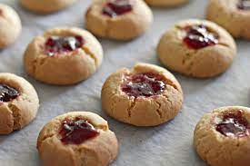

|

|
- JamDrops ingredients:
-
- 1/2
cup butter, softened
- 1cup sugar
- 2 eggs
- 1/4teaspoon vanilla
- 1 1/4 cups all-purpose flour
- 1 teaspoon baking soda
- 1 teaspoon ground cinnamon
- 1/4teaspoon salt
- 1 1/2 cups shredded peeled apples (about 2 medium apples)
- 1/2 cup chopped walnuts
- 1quart vanilla or cinnamon ice cream
|